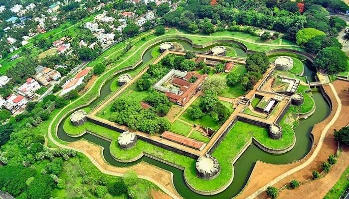
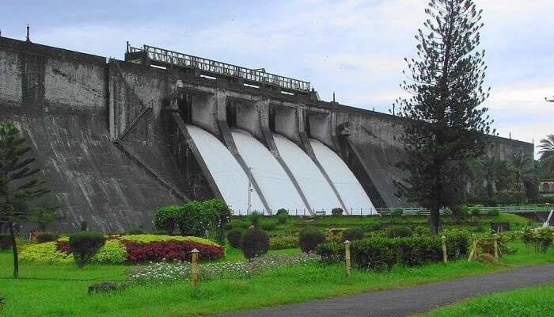
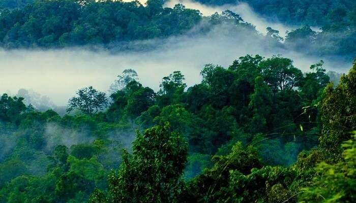
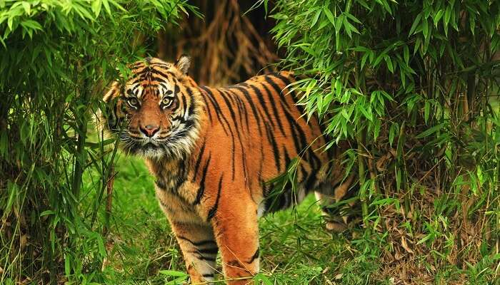
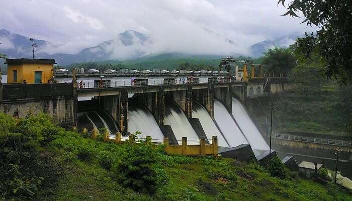
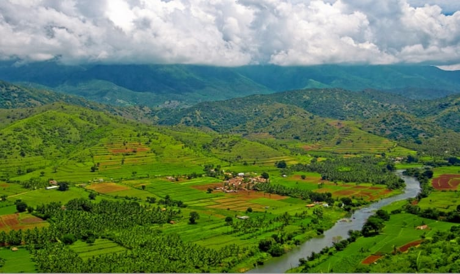

1. Palakkad Fort

2.Dhoni Waterfalls

3. Malampuzha Dam

4. Nelliyampathy Hills

5. Silent Valley National Park

6.Mangalam Dam

7. Kollengode Palace

8. Parambikulam Wildlife Sanctuary

9. Jain Temple

10. Attappadi

Palakkad is one of the fourteen districts of Kerala and has no coastal line. The district opens the state to the rest of the country through the Palakkad Gap with a width of 32 to 40 Kms. Its geographical position, historical background, educational status, tourism hot-spots and above all, the development activities that are carried out, are wide and varied. The district is one of the main granaries of Kerala and its economy is primarily agricultural. The district is also the land of Palmyrahs.
Palakkad or Palghat, situated in the foothills of the Nilgiris, is widely heralded as the gateway to Kerala. A natural break in the mountains, the Palakkad Gap connects Kerala to Tamil Nadu. It holds tremendous historical importance and with the blessing of the monsoons, magically turns fertile green.